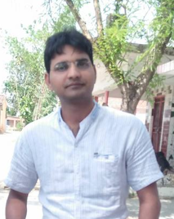

KUWAR MANISH SHRIVASTAV
Senior Software engineer
Personel Details
SUMMARY
Passionate Software Engineer with 5+ years of experience specializing in web application development (Frontend), Functional & Whitebox testing. Expertise in CMS Page Creation within Microsoft Partner Network (MPN) platform. Detail-oriented QA professional experienced in call automation testing for telecommunication systems. Proficient in Microsoft Visual Studio 2022 and Postman for API and Ul testing. Experienced in code-level verification of page responsiveness. Skilled in stakeholder collaboration for translating requirements into digital experiences. Experienced in Sitecore, ServiceNow, and Cloud DAM for streamiined page creation. Adept in Al testing including functional, UI/UX, and security feature testing, with experience in Prompt Engineering, Plugins, GPTS, Custom GPT creation, and module- wise testing of third party and first party GPTs
PROFESSIONAL EXPERIENCE
AI QA Engineer
2023-Present
Copilot
Lucknow, India
- Integration testing was performed to ensure seamless integration of plugins and GPTS with the main software, verifying correct interaction with existing components without disrupting functionality.
- As a Functional Testing the plugin performed its intended tasks accurately and efficiently by testing various functionalities, features, and user interactions.
- Performed compatibility testing to ensure smooth functioning of plugins and GPTs across platforms, operating systems, and software versions, avoiding any compatibility glitches in varied environments.
- Created detailed test plans outlining scope, approach, and resource requirements for prompt engineering and functional testing activities
Software Engineer
2021-2023
ACS Call Automation
Lucknow, India
- Utilized Dev Tunnel, Event Grid, Webhooks, Speech Studio, Phone Number Acquisition, and Ngrok for white box testing purposes.
- Analyzed line of code (LOC), Code debugging/Compile, Code Run, test results and identified issues.
- Utilized Postman's Collection Runner for sequential API request execution, REST API and end-to-end functionality validation.
- Conducted comprehensive code testing and analysis across C#, Python, Android Studio (Java), JavaScript, and Java.
- Utilized frameworks including Visual Studio, Android Studio, and Node.js. Conducted testing across iOS, Windows, and Android platforms.
Software Developer
2019-2021
Microsoft Partner Network (MPN) Sitecore CMS
Lucknow, India
- Utilized HTML, CSS, and JavaScript to implement responsive web designs and layouts.
- Created web pages using Sitecore, a leading content management system (CMS), to implement client provided mockups and design specifications for the MPN project.
- Utilized Cloud DAM to store, organize, and retrieve digital assets, ensuring their availability for web page creation and other project needs.
- Stayed updated with the latest features and enhancements of ServiceNow, Sitecore, and Cloud DAM, proactively suggesting improvements and optimizations to enhance project efficiency.
EDUCATION
B.Tech (I.T) [2008-2012]
U.P.T.U , Lucknow, UP.
M.Tech (C.S) [2014 - 2016]
Jaypee University, Noida, UP.
SKILLS
Languages
HTML, css, c, JavaScript, MySQL
Tools and Technologies
Postman, Cloud DAM, Sitecore,
Power Bl, Salesforce, Webhook,
Event Grid, Dev Tunnel, Ngrok,
Azure (Azure DevOps)
CERTIFICATION
ASP.NET with
Created School Management Portal (2018-2019)
IBM Mainframe
Attended Workshop of IBM
Mainframe
Hobbies
My honbbies